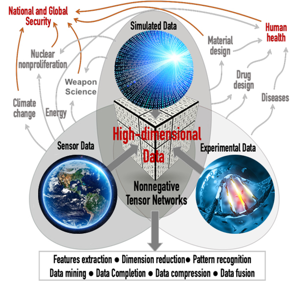

Tensor Extraction of Latent Features (T-ELF)#

T-ELF offers an expansive range of tailored software solutions designed for in-depth analysis of extensive datasets. We excel in extracting hidden patterns with precision, leveraging the formidable capabilities of high-performance computing and cutting-edge GPU architectures. Our methodology is rooted in scalable, highly efficient algorithms.
Within T-ELF’s arsenal are non-negative matrix and tensor factorization solutions, equipped with automatic model determination (also known as the estimation of latent factors - rank). This ensures accurate data modeling and extraction of concealed patterns. Furthermore, our software suite encompasses cutting-edge data pre-processing and post-processing modules for tasks such as text mining, Natural Language Processing, as well as matrix and tensor analysis/building tools.
T-ELF’s versatility extends to a diverse array of disciplines, making it a potent AI and data analytics solution. It has found applications in Large-scale Text Mining, High Performance Computing, Computer Security, Applied Mathematics, Dynamic Networks and Ranking, Biology, Material Science, Medicine, Chemistry, Data Compression, Climate Studies, Relational Databases, Data Privacy, Economy, and Agriculture.
Resources#
Installation#
Option 1: Install via PIP and CONDA
Step 1: Install the library
git clone https://github.com/lanl/T-ELF.git
cd T-ELF
conda create --name TELF python=3.8.5
source activate TELF # or conda activate TELF
python setup.py install
Step 2: Install Spacy NLP model and NLTK Packages
python -m spacy download en_core_web_lg
python -m nltk.downloader wordnet omw-1.4
Step 3: Install Cupy if using GPU (Optional)
conda install -c conda-forge cupy
Step 4: Install MPI if using HPC (Optional)
module load <openmpi> # On a HPC Node
pip install mpi4py
Option 2: Install via CONDA Only
Step 1: Download the Library
git clone https://github.com/lanl/T-ELF.git
cd T-ELF
- Step 2: Install/Setup the Environment (CPU or GPU)
2a: CPU
conda env create --file environment_cpu.yml
2b: or GPU
conda env create --file environment_gpu.yml
Step 3: Setup TELF
conda activate TELF_conda
conda develop .
Step 4: Install Spacy NLP model and NLTK Packages
python -m spacy download en_core_web_lg
python -m nltk.downloader wordnet omw-1.4
Step 5: Install MPI if using HPC (Optional)
module load <openmpi>
conda install -c conda-forge mpi4py
Capabilities#
{kind=link}
Please see our publications for the capabilities.
How to Cite T-ELF?#
APA:
Eren, M., Solovyev, N., Barron, R., Bhattarai, M., Boureima, I., Skau, E., Rasmussen, K., & Alexandrov, B. (2023). Tensor Extraction of Latent Features (T-ELF) (Version 0.0.1) [Computer software]. https://github.com/lanl/T-ELF
BibTeX:
@software{Tensor_Extraction_of_2023,
author = {Eren, Maksim and Solovyev, Nick and Barron, Ryan and Bhattarai, Manish and Boureima, Ismael and Skau, Erik and Rasmussen, Kim and Alexandrov, Boian},
month = oct,
title = {{Tensor Extraction of Latent Features (T-ELF)}},
url = {https://github.com/lanl/T-ELF},
version = {0.0.1},
year = {2023}
}
Copyright Notice#
© 2022. Triad National Security, LLC. All rights reserved. This program was produced under U.S. Government contract 89233218CNA000001 for Los Alamos National Laboratory (LANL), which is operated by Triad National Security, LLC for the U.S. Department of Energy/National Nuclear Security Administration. All rights in the program are reserved by Triad National Security, LLC, and the U.S. Department of Energy/National Nuclear Security Administration. The Government is granted for itself and others acting on its behalf a nonexclusive, paid-up, irrevocable worldwide license in this material to reproduce, prepare derivative works, distribute copies to the public, perform publicly and display publicly, and to permit others to do so.
LANL C Number: C22048
License#
This program is open source under the BSD-3 License. Redistribution and use in source and binary forms, with or without modification, are permitted provided that the following conditions are met:
1. Redistributions of source code must retain the above copyright notice, this list of conditions and the following disclaimer.
2. Redistributions in binary form must reproduce the above copyright notice, this list of conditions and the following disclaimer in the documentation and/or other materials provided with the distribution.
3. Neither the name of the copyright holder nor the names of its contributors may be used to endorse or promote products derived from this software without specific prior written permission.
THIS SOFTWARE IS PROVIDED BY THE COPYRIGHT HOLDERS AND CONTRIBUTORS “AS IS” AND ANY EXPRESS OR IMPLIED WARRANTIES, INCLUDING, BUT NOT LIMITED TO, THE IMPLIED WARRANTIES OF MERCHANTABILITY AND FITNESS FOR A PARTICULAR PURPOSE ARE DISCLAIMED. IN NO EVENT SHALL THE COPYRIGHT HOLDER OR CONTRIBUTORS BE LIABLE FOR ANY DIRECT, INDIRECT, INCIDENTAL, SPECIAL, EXEMPLARY, OR CONSEQUENTIAL DAMAGES (INCLUDING, BUT NOT LIMITED TO, PROCUREMENT OF SUBSTITUTE GOODS OR SERVICES; LOSS OF USE, DATA, OR PROFITS; OR BUSINESS INTERRUPTION) HOWEVER CAUSED AND ON ANY THEORY OF LIABILITY, WHETHER IN CONTRACT, STRICT LIABILITY, OR TORT (INCLUDING NEGLIGENCE OR OTHERWISE) ARISING IN ANY WAY OUT OF THE USE OF THIS SOFTWARE, EVEN IF ADVISED OF THE POSSIBILITY OF SUCH DAMAGE.
Developer Test Suite#
Developer test suites are located under tests/ directory (located here).
Tests can be ran from this folder using python -m pytest *.
Contents:
- TELF.factorization.NMFk: Non-negative Matrix Factorization with Automatic Model Determination
- Example
- Available Functions
- Module Contents
- TELF.factorization.RESCALk: RESCAL with Automatic Model Determination
- Example
- Available Functions
- Module Contents
- TELF.factorization.TriNMFk: NMFk with Automatic Determination of Latent Clusters and Patterns
- Example
- Available Functions
- Module Contents
- TELF.pre_processing.Beaver: Fast matrix and tensor building tool
- Example
- Available Functions
- Module Contents
- TELF.pre_processing.Vulture: Advanced text pre-processing and cleaning tool for NLP and text-mining
- Example
- Available Functions
- Module Contents
- TELF